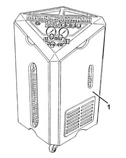
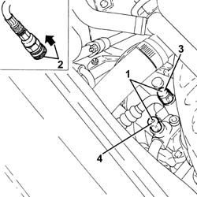
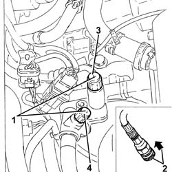
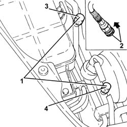
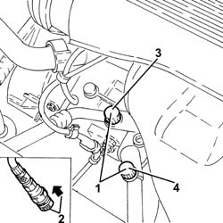
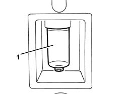

0010T84 COOLANT FOR AIR CONDITIONING SYSTEM DEHYDRATE AND RECHARGE
- Path
- Procedures > 00 MAINTENANCE > 0010 UNITA' NUOVE E MANUT. PROGRAMMATA > 0010T VEHICLE OIL AND FLUIDS > 0010T84 COOLANT FOR AIR CONDITIONING SYSTEM DEHYDRATE AND RECHARGE
- Kind
- repair procedure (removal / refitting; the operation number is the code)
- Applies to
- all engines; all production periods
- Interactive page
- https://sloeber94.github.io/elrnDB-aGt/en/#/125000849
Applies to: all engines; all production periods
.
1. Use the special draining and repressurizing equipment.

Applies to: all engines; all production periods
Let the engine run with the air conditioning on for 10 - 15 minutes.
Applies to: engines: 1.9 JTD 16V; all production periods
1. Undo the repressurizing valve caps.
2. Before fitting the connectors on the needle valves, move the knurled ring nut upwards.
3. Connect the high pressure connecting pipe (HIGH) to the corresponding rapid attachment valve.
4. Connect the low pressure connecting pipe (LOW) to the corresponding rapid attachment valve.

Applies to: engines: 2.0 JTS; all production periods
1. Undo the repressurizing valve caps.
2. Before fitting the connectors on the needle valves, move the knurled ring nut upwards.
3. Connect the high pressure connecting pipe (HIGH) to the corresponding rapid attachment valve.
4. Connect the low pressure connecting pipe (LOW) to the corresponding rapid attachment valve.

Applies to: engines: 3.2 V6; all production periods
1. Undo the repressurizing valve caps.
2. Before fitting the connectors on the needle valves, move the knurled ring nut upwards.
3. Connect the high pressure connecting pipe (HIGH) to the corresponding rapid attachment valve.
4. Connect the low pressure connecting pipe (LOW) to the corresponding rapid attachment valve.

Applies to: engines: 1.8 T.SPARK; all production periods
- Undo the repressurizing valve caps.
- Before fitting the connectors on the needle valves, move the knurled ring nut upwards.
- Connect the high pressure connecting pipe (HIGH) to the corresponding rapid attachment valve.
- Connect the low pressure connecting pipe (LOW) to the corresponding rapid attachment valve.

Applies to: all engines; all production periods
Start the procedure for draining the refrigerant fluid, following the instructions in the equipment manual.
1. Whilst draining the system the compressor fluid that comes out collects in a special container.

Applies to: all engines; all production periods
Refill the system with exactly the same amount of fluid indicated on the container.
Type | Component | Description | Qty. | |
|---|---|---|---|---|
- | Oil | AIR CONDITIONER ASSEMBLY COMPRESSOR | SP 10 | - |
If some of the components are being replaced, the following amount of oil must be added for each of the replaced components:
drier filter, 15 cm3,
piping, 5 cm3,
evaporator, 40 cm3,
condenser, 50 cm3.
If there are accidental breaks that cause the "rapid" draining of the system (in less than 5 minutes) then the exact amount of fluid that comes out cannot be determined because the high pressure may cause seepage. Add the following recommended amount of oil 50 cm3.
Start the procedure for repressurizing the refrigerant fluid, following the instructions in the equipment manual.
Pressurize the refrigerant fluid of the correct type in the quantity recommended.
Type | Component | Description | Qty. | |
|---|---|---|---|---|
- | Fluid [g] | AIR CONDITIONING CIRCUIT | R134a | 500 ± 40 |
In the case of damage to the compressor or other system components or following prolonged exposure of the pipes to the air (more than 6 hours) the washing procedure must be carried out as follows.
Clean the pipes connected to the compressor using a jet of air.
Connect the (drained) system to the repressurizing equipment.
Introduce the recommended quantity of refrigerant fluid at the high pressure side.
Collect the refrigerant fluid at the low pressure side.
Repeat the introduction and collection of fluid.
Proceed with draining and repressurizing the system as illustrated previously.
Refill the system with the recommended amount of oil.
Type | Component | Description | Qty. | |
|---|---|---|---|---|
- | Oil | AIR CONDITIONER ASSEMBLY COMPRESSOR | SP 10 | 130 cm3 |
Topics that link to this page (40)
- L12 CLIMATE CONTROL TOO COLD
- 1004B10 POWER UNIT WITH MANUAL GEARBOX - R + R
- 1004B24 POWER UNIT WITH MANUAL GEARBOX WITH HYDRAULIC SELECTION - R R
- 1008A44 REAR RIGID MOUNT - R R
- 1020A20 CRANK CASE OIL SUMP - R + R CLEAN SEALS FOR SEALANT APPLICATION
- 1020D10 FRONT CRANK SHAFT OIL SEAL COVER - R + R AND REPLACE SEALS WITH TIMING BELT REMOVED
- 1020D15 FRONT CRANKSHAFT OIL SEAL COVER-R+R AND REPLACE SEALS FOR ENGINES WITH OIL PUMP ON CRANKSHAFT AND HEAT EXCHANGER
- 1020D36 FLYWHEEL END OIL SEAL - REPLACE FOR MANUAL GEARBOX WITH HYDRAULIC SELECTION VERSIONS
- 1024B11 ENGINE FLYWHEEL - R R FOR MANUAL GEARBOX WITH HYDRAULIC SELECTION VERSIONS
- 1028H10 PISTON WITH CONNECTING ROD - R R
- 1076B10 EXHAUST PIPE ASSEMBLY - R + R
- 1076B34 FRONT CATALYTIC CONVERTER ATTACHMENT SEAL - REPLACE
- 1080B62 CATALYTIC CONVERTER - R + R
- 1080E60 PIPE FROM FUEL VAPOUR SEPARATOR TO ACTIVATED CARBON FILTER - R R
- 1084B26 EMGINE OIL INTAKE DUCT - R R
- 1088D24 RIGID PIPE FOR COOLANT INLET TO WATER PUMP - R + R
- 1810A20 CLUTCH - R + R
- 1810A28 CLUTCH - R R FOR MANUAL GEARBOX WITH HYDRAULIC SELECTION VERSIONS
- 1820A24 THRUST BEARING LINKAGE - R + R
- 2110A10 MANUAL GEARBOX AND DIFFERENTIAL - R + R
- 2110A11 MANUAL GEARBOX WITH DIFFERENTIAL - R R FOR VERSIONS WITH HYDRAULIC SELECTION
- 2110C24 SEALS FOR GEARBOX INPUT SHAFT - R R FOR MANUAL GEARBOX WITH HYDRAULIC SELECTION VERSIONS
- 2110D53 LEFT HAND FLANGE ON DIFFERENTIAL - R+R
- 2710A35 INTERMEDIATE DRIVE SHAFT MOUNT - R R
- 4130B40 OUTLET PIPE FROM PUMP TO POWER STEERING CASE R R
- 4410D13 FRONT SUSPENSION BEAM - R R
- 4410D15 FRONT SUSPENSION BEAM COMPLETE WITH WISHBONES AND STABILISER BAR R R
- 5040A10 EXPANSION/CONNECTION PIPE - R R
- 5040A20 AIR CONDITIONER COMPRESSOR - R+R - INCLUDES FLUID LEVEL CHECK AND TOP UP IF NECESSARY
- 5040A26 COMPRESSOR MOUNT - R R
- 5040A40 AIR CONDITIONER CONDENSER - R+R
- 5040A44 AIR CONDITIONER DEHYDRATING FILTER/ACCUMULATOR - R+R
- 5040A50 PIPE FROM COMPRESSOR TO AIR CONDITIONER CONDENSER - R+R
- 5040A60 PIPE FROM CONDENSER TO EVAPORATOR (EXPANSION PIPE) - R+R
- 5040A64 PIPE FROM EVAPORATOR TO DEHYDRATING FILTER/ACCUMULATOR - R+R
- 5040A73 COMPRESSOR INLET PIPE - R R
- 5040A76 TANDEM PIPE FOR DELIVERY AND RETURN FROM EVAPORATOR RR
- 5040B30 EXPANSION VALVE (TUBE ORIFICE) - R+R
- 5040C15 AIR CONDITIONER HOUSING - R R WITH FACIA DISCONNECTED FOR VERSIONS WITH PASSENGER AIRBAG
- 5530A10 ALTERNATOR - R+R